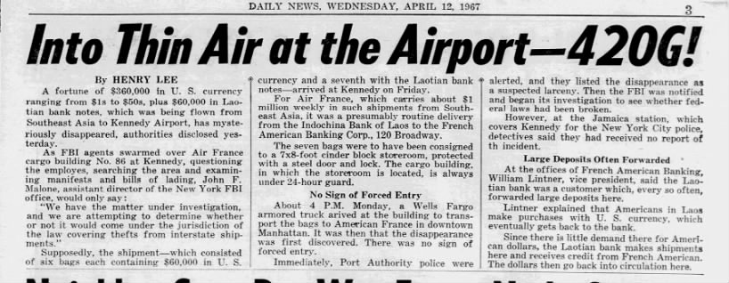

Summary
The 1967 Air France robbery was a major robbery that took place in April 1967, when associates of the Lucchese crime family stole $420,000 ($3.01 million in 2024) from the Air France cargo terminal at New York City's JFK International Airport. While there were many cargo thefts at JFK airport in 1967, this was the largest cash robbery that had taken place at the time. It was carried out by Henry Hill, Robert McMahon, Tommy DeSimone, and Montague Montemurro, on a tip-off from McMahon. Hill believed it was the Air France robbery that endeared him to the Mafia.
How Did the Robbery Happen?

Air France was the carrier for American currency that had been exchanged in Southeast Asia. The airline had contracted to return the money to the US for depositing with American banks. The money was usually carried in linen bags, each containing US$60,000, and Air France shipped up to $1 million per week in this manner. The money was stored in a cement-block strong room with a round-the-clock private security guard.
According to Robert McMahon, who worked for Air France's cargo operation, Air France aircraft regularly delivered three or four $60,000 packages at a time, and he told Henry Hill that three or four men with pistols could easily steal it. However, it was difficult to predict when the money would be there, so a stickup was risky. Hill decided it would be better to steal the key so they could attempt to steal the money at a moment's notice without tipping off Air France that they knew about the money. Reconnaissance missions revealed that the most difficult obstacle would be the security guard, who kept the key with him at all times, even on days off.
A break into the guard's home turned up a potential vulnerability: women. McMahon introduced the guard to an expensive escort at The Jade East Motel located near JFK International Airport. In time, the guard and the escort became intimate. After a number of dry runs, McMahon and the escort were able to distract the guard long enough for Hill to retrieve the key from his pants and make a copy.
